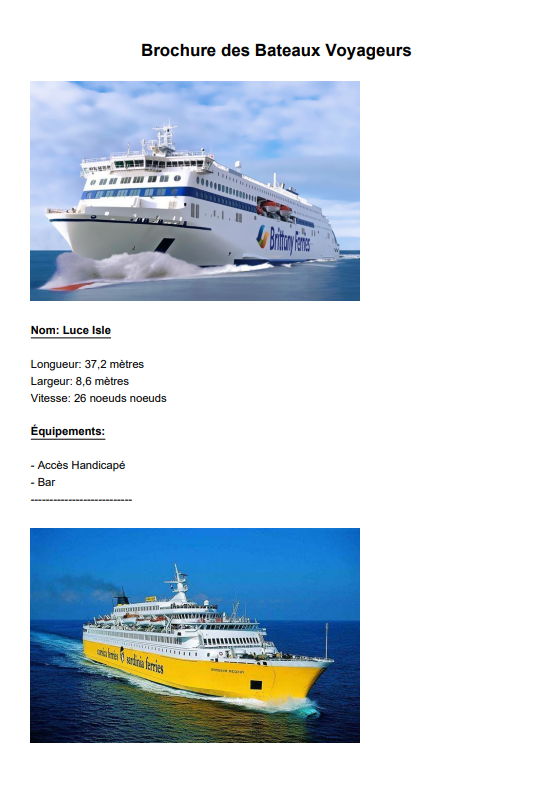

MarieTeam est une compagnie spécialisée dans le transport maritime de passagers et de marchandises,
assurant la liaison entre le continent et plusieurs îles du littoral français. Grâce à son expertise et à une flotte moderne, la société garantit des traversées sûres,
régulières et adaptées aux besoins des voyageurs comme des professionnels du fret.
Dans le cadre de son développement, MarieTeam souhaite moderniser son système de gestion des liaisons maritimes en mettant en place une
application web dynamique et une application mobile dédiée aux capitaines.
MarieTeam mise sur ces innovations pour améliorer l’expérience utilisateur, optimiser la gestion de ses traversées et renforcer sa compétitivité sur le marché
du transport maritime.
Pour réaliser se projet , nous avons choisi de travailler en équipe de 3 personnes, afin de travailler le mode projet en groupe.
Les objectifs du projets sont :
Offrir aux clients une plateforme intuitive pour consulter les liaisons maritimes, les tarifs et les horaires des traversées.
Mettre en place un système de réservation en ligne, permettant une gestion fluide des billets et des places disponibles.
Développer une application mobile pour les capitaines, afin d’améliorer la collecte et la transmission des données en mer, malgré les zones de faible connectivité.
Assurer une gestion sécurisée et optimisée des accès, notamment pour les administrateurs et les responsables de la compagnie.
Réalisation Professionnelle 1 : Application Web
Cette partie du projet consiste en la création d'une application web permettant aux clients de :
Consulter les liaisons maritimes disponibles
Voir les tarifs et horaires
Effectuer des réservations en ligne
Avoir une partie admin afin de gérer les utilisateurs et les réservations
L'application est développée en utilisant HTML, CSS, JavaScript, et une base de données relationnelle.
je vais vous présenter les différentes étapes de la réalisation de cette application web et les différentes fonctionnalités.
Tout d'abord nous avons créer un DCU (diagrammes de cas d'utilisation) pour le projet, afin de déterminer les besoins des utilisateurs et des gestionnaires.
Nous avons réalisé ensuite un MCD (Modèle Conceptuel de Données) avec le logiciel looping pour définir les entités et les relations entre elles.
Suite a cela nous avons donc importé le script SQL donné par looping pour créer notre base de données pour ensuite la remplir avec un jeu d'essai.
Après avoir créer la base de données et notre jeu d'essai nous avons commencé a coder une première partie du site, nous pouvons voir d'abord la page d'accueil
ainsi que deux fonctionnalités qui sont ici la page reserver qui va chercher les informations dans la base de données pour les afficher sur le site pour que les
utilisateurs puissent reserver une traversée, et la deuxième est la page statistiques côté administrateur qui permet d'aller faire un calcul dans la base de données
pour obtenir différentes statistiques.
cette fonctionnalité permet donc d'aller écrire dans la base de données les informations rentrés par les utilisateurs a l'inscription, afin de pouvoir la liaison entre le code et la BDD.
Réalisation Professionnelle 2 : Création d’un client lourd pour l’édition de brochures
Une application mobile est développée pour les capitaines, leur permettant de :
Se connecter au compte utilisateur/admin
Consulter les équipements d'un bateau
Ajouter un nouveau bateau, ou modifier les équipements et la photo d'un bateau existants (admin uniquement)
Générer un PDF avec toutes les informations des bateaux
Cette application est développée en utilisant le langage de programmation C# adaptées aux besoins de MarieTeam et est destinée a tous types d'utilisateur.
voici comment est constitué cette application :
Tout d'abord quand l'application est lancé les utilisateurs doivent se connecter afin d'accèder uniquement aux fonctionnalités compatible avec leurs comptes.
Voila comment les pages de l'application sont constitués après la connexion, la première est celle de l'utilisateur classique et donc il peut consulter
les équipments des bateaux et générer un PDF qui est une brochure avec l'ensemble des bateaux et leurs équipements.
La deuxième image est l'interface admin, cette derniere est comme les utilisateurs mais il peut ajouter un nouveau bateau, ou modifier
les équipements et la photo d'un bateau existants

Pour finir voici a quoi ressemble la brochure des bateaux une fois que l'utilisateur clique sur le bouton générer PDF depuis l'application